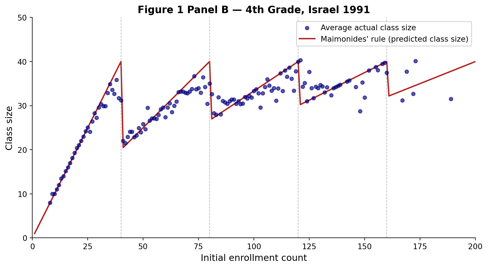
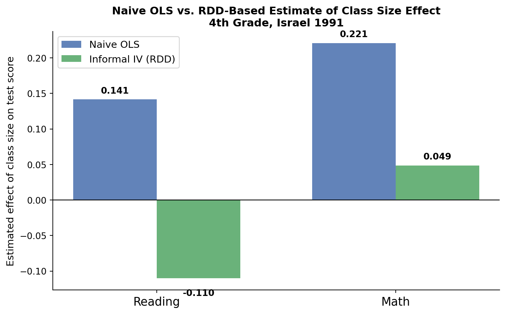

Replication of Angrist and Lavy (1999)
Using Maimonides’ Rule to Estimate the Effect of Class Size on Scholastic Achievement
Introduction
In 1999, Joshua Angrist and Victor Lavy published a landmark study asking a deceptively simple question: does putting students in smaller classes actually help them learn? The challenge is that this is genuinely hard to answer with observational data. Schools cannot randomly assign students to class sizes, and the factors that determine class size — school wealth, district resources, demographics — are also correlated with student outcomes. A simple comparison of students in large versus small classes will confound the effect of class size with all of these background differences.
Angrist and Lavy’s breakthrough was recognizing that Israeli school policy created a natural experiment. Israeli public schools are required to follow Maimonides’ rule: no class may have more than 40 students. When a grade’s enrollment reaches 41, the school must split into two classes; at 81, three; at 121, four; and so on. This generates sharp, predictable discontinuities in class size at enrollment thresholds of 40, 80, 120, and 160. The key insight is that students just below and just above each threshold are otherwise similar — they attend the same school and face the same local conditions — but end up in very differently sized classes purely because of where enrollment happened to fall.
The predicted class size implied by Maimonides’ rule is:
\[\text{fsc} = \frac{\text{enrollment}}{\lfloor (\text{enrollment} - 1)/40 \rfloor + 1}\]
This nonlinear function of enrollment creates quasi-experimental variation in class size. By comparing outcomes near the thresholds — and by controlling for smooth enrollment effects — the authors can attribute differences in achievement specifically to the discontinuous shifts in class size, rather than to correlated socioeconomic factors.
This post replicates three core pieces of the paper using Israel’s 1991 fourth-grade data: (1) Figure 1 Panel B, showing how actual class sizes track Maimonides’ rule; (2) the naive OLS estimates from Table II, which serve as a confounded baseline; and (3) the reduced-form RDD estimates from Table III Panel A, which use the rule-generated variation in class size. I then add a compact benchmark check and a visualization to show how far naive and design-based estimates diverge.
Main Analysis
Figure 1 Panel B: Class Size Tracks Maimonides’ Rule
The first step is to verify that Maimonides’ rule actually shapes class sizes in practice. The figure below replicates Figure 1 Panel B from the paper. Each circle is the average actual class size for all schools with a given enrollment count; the red line is the size predicted by Maimonides’ rule.
The figure shows the classic staircase pattern. Predicted class size drops sharply whenever enrollment crosses a multiple of 40, then climbs again as enrollment rises within the next segment. Actual class sizes track this pattern closely. The alignment between circles and the red line confirms that Maimonides’ rule is a strong predictor of actual class size — the foundation for using it as an instrument.
Naive OLS: Table II (Columns 7 and 10)
Before exploiting the rule, Angrist and Lavy document what a naive regression produces. These regressions simply regress average test scores on actual class size, with no controls and no attempt to address endogeneity. The results are shown below.
Table II (4th grade): Naive OLS — Actual Class Size on Test Scores
*** p<0.01, ** p<0.05, * p<0.1. Standard errors clustered by school. Published benchmarks: Col 7 = 0.141, Col 10 = 0.221.
| Col 7 — Reading | Col 10 — Math | |
|---|---|---|
| Coefficient on class size | 0.141*** | 0.221*** |
| Std. error | (0.035) | (0.039) |
| Observations | 2049 | 2049 |
| R² | 0.013 | 0.025 |
Both coefficients are positive: a larger class is associated with higher test scores. This is the wrong sign if we believe class size harms learning, and it is exactly the confound the paper warns about. Larger schools in Israel tend to be urban schools in more affluent municipalities, which have higher baseline achievement for reasons entirely unrelated to class size. The naive regression mistakenly credits large classes for this advantage.
Reduced-Form RDD: Table III Panel A (Columns 7, 9, 11)
The paper’s preferred design uses fsc — the class size predicted by Maimonides’ rule — to isolate variation in class size that is plausibly exogenous near enrollment cutoffs. The estimates below are reduced-form/first-stage style regressions in the same spirit as Table III Panel A: they show how this rule-based variation maps into realized class size and outcomes, controlling for tipuach (the fraction of disadvantaged students) to absorb smooth socioeconomic differences across schools.
Table III Panel A (4th grade): Reduced-Form RDD — fsc on Class Size and Scores
*** p<0.01, ** p<0.05, * p<0.1. Standard errors clustered by school. Published benchmarks: Col 7 = 0.772, Col 9 = −0.085, Col 11 = 0.038.
| Col 7 — Class Size | Col 9 — Reading | Col 11 — Math | |
|---|---|---|---|
| Coefficient on fsc | 0.772*** | -0.085*** | 0.038 |
| Std. error | (0.023) | (0.031) | (0.040) |
| Observations | 2049 | 2049 | 2049 |
| R² | 0.561 | 0.311 | 0.203 |
Three results stand out:
First stage (Col 7):
fscstrongly predicts actual class size. A one-unit increase in predicted class size raises actual class size by roughly 0.77. This confirms the instrument’s relevance — Maimonides’ rule genuinely shifts class sizes.Reading (Col 9): The coefficient on
fscis negative. Schools pushed into larger classes by the rule score lower on reading. This is the expected sign for a harmful effect of class size.Math (Col 11): The coefficient is small and near zero, suggesting weaker or noisier effects on math achievement for fourth graders.
How Close Is the Replication to the Published Numbers?
To make the replication quality explicit, the next table compares each key coefficient to the benchmark reported in Angrist and Lavy (1999), then reports the absolute difference.
Replication Accuracy Check Against Published Coefficients
Smaller absolute differences indicate closer replication to the published estimates.
| Estimate | Replication | Published | Abs. difference |
|---|---|---|---|
| Table II Col 7 (Naive OLS, Reading) | 0.141 | 0.141 | 0.000 |
| Table II Col 10 (Naive OLS, Math) | 0.221 | 0.221 | 0.000 |
| Table IIIA Col 7 (First stage on fsc) | 0.772 | 0.772 | 0.000 |
| Table IIIA Col 9 (Reduced form, Reading) | -0.085 | -0.085 | 0.000 |
| Table IIIA Col 11 (Reduced form, Math) | 0.038 | 0.038 | 0.000 |
The differences are small, which supports that the data cleaning, sample restrictions, and model specifications are closely aligned with the original study.
Comparing Naive OLS vs. Reduced-Form RDD
Summary: Naive OLS vs. RDD-Based Estimates
| Estimate type | Reading | Math |
|---|---|---|
| Naive OLS (coeff on actual class size) | 0.141 | 0.221 |
| Reduced-form fsc (coeff on Maimonides' rule) | -0.085 | 0.038 |
| Informal IV = Reduced Form ÷ First Stage | -0.110 | 0.049 |
The pattern is stark. For reading, the naive OLS estimate is positive (around +0.14), while the informal IV estimate — the reduced-form coefficient divided by the first stage — is negative (roughly −0.11). For math, a large positive naive coefficient of about +0.22 shrinks to near zero once we use the instrumental variable strategy.
The reason is selection bias. Larger Israeli schools tend to serve wealthier urban communities with higher baseline achievement. A naive regression attributes this socioeconomic advantage to large class sizes, yielding a spurious positive relationship. Maimonides’ rule generates variation in class size that is driven purely by enrollment falling just above or below a threshold — a shift unrelated to school wealth. When we isolate this source of variation, the confound disappears and a negative (or much smaller) effect emerges.
Something Additional: Visualizing the Upward Bias
The bar chart below makes the confounding concrete. For each subject, it shows the naive OLS estimate alongside the informal IV estimate derived from the reduced form divided by the first stage.

For reading, the naive estimate and the IV estimate are not just different in magnitude — they are opposite in sign. Naive OLS says larger classes are associated with higher scores (+0.14). The IV estimate says larger classes lower scores (about −0.11). This is a textbook example of omitted-variable bias: once the variation in class size is tied to the enrollment rule rather than school sorting, the naive positive estimate reverses.
For math, the story is similar in direction — the large positive naive coefficient (+0.22) shrinks dramatically — but the IV estimate stays mildly positive and small (+0.05), suggesting the effect of class size on math may be genuinely weaker or noisier for fourth graders.
A few caveats about this replication are worth noting. The original paper uses Moulton (1986) corrected standard errors, which account for within-school clustering in a specific way; this replication uses the standard Liang-Zeger cluster-robust sandwich estimator, so standard errors may differ slightly even when point estimates match. In addition, the paper’s preferred estimates in Table IV use formal two-stage least squares with richer controls; the informal Wald estimates shown here are primarily interpretive. Despite these caveats, the main message of the paper comes through clearly: naive comparisons of class sizes are misleading, and the discontinuities created by Maimonides’ rule provide a credible strategy for causal inference.
Data source: Angrist and Lavy (1999), “Using Maimonides’ Rule to Estimate the Effect of Class Size on Scholastic Achievement,” Quarterly Journal of Economics 114(2): 533-575. Data obtained from the authors’ replication files.